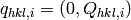
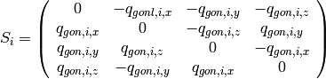

CalculateUMatrix dialog.
Table of Contents
| Name | Direction | Type | Default | Description |
|---|---|---|---|---|
| PeaksWorkspace | InOut | PeaksWorkspace | Mandatory | An input workspace. |
| a | Input | number | Mandatory | Lattice parameter a |
| b | Input | number | Mandatory | Lattice parameter b |
| c | Input | number | Mandatory | Lattice parameter c |
| alpha | Input | number | Mandatory | Lattice parameter alpha |
| beta | Input | number | Mandatory | Lattice parameter beta |
| gamma | Input | number | Mandatory | Lattice parameter gamma |
Given a set of peaks (Q in the goniometer frame, HKL values), and given
lattice parameters  , it will try to
find the U matrix, using least squares approach and quaternions
1. Units
of length are in in
, it will try to
find the U matrix, using least squares approach and quaternions
1. Units
of length are in in  , angles are in degrees.
, angles are in degrees.
The algorithm calculates first the B matrix according to Busing and Levi.
Given a set of peaks in the reference frame of the inner axis of the
goniometer,  , indexed by
, indexed by  , we
want to find the U matrix that maps peaks in the reciprocal space of the
sample to the peaks in the goniometer frame
, we
want to find the U matrix that maps peaks in the reciprocal space of the
sample to the peaks in the goniometer frame
(1)
For simplicity, we define
(2)
In the real world, such a matrix is not always possible to find. Therefore we just try minimize the difference between the two sets of p
(3)
In equation (3),  , so the
first two terms on the left side are U independent. Therefore we want to
maximize
, so the
first two terms on the left side are U independent. Therefore we want to
maximize
(4)
We are going to write the scalar product of the vectors in terms of
quaternions 2. We define
,
 and the rotation U is
described by quaternion
and the rotation U is
described by quaternion 
Then equation (4) will be written as
(5)
We define matrices
(6)
and
(7)
Then, we can rewrite equation (5) using matrices 3, 4:
(8)
The problem of finding  that maximizes the
sum can now be rewritten in terms of eigenvectors of
that maximizes the
sum can now be rewritten in terms of eigenvectors of
 . Let
. Let  and
and
 be the eigenvalues and corresponding eigenvectors of
be the eigenvalues and corresponding eigenvectors of
 , with
, with
 . We can write
any vector
. We can write
any vector  as a linear combination of the eigenvectors
of :
as a linear combination of the eigenvectors
of :
(9)
(10)
(11)
where  is a unit quaternion,
is a unit quaternion,
 (12)
(12)
Then the sum in equation (11) is maximized for 
Therefore U is the rotation represented by the quaternion ,
which is the eigenvector corresponding to the largest eigenvalue of
.
Categories: Algorithms | Crystal\UBMatrix
{kind=link}